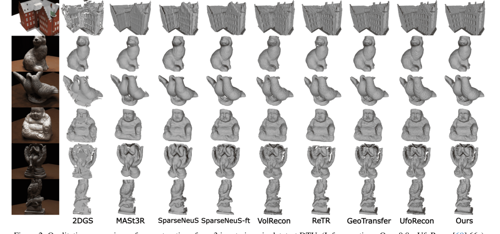
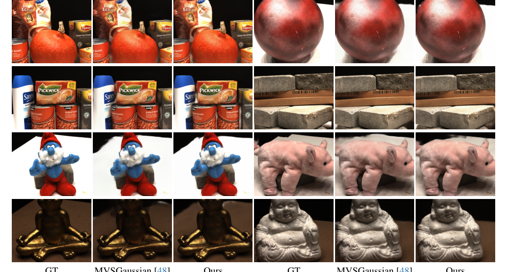

SparSplat
简单摘要
这篇工作要解决的问题是：通过多视图立体重建 (MVS) 和新视图合成 (NVS) 从场景中恢复 3D 信息本身就具有挑战性，特别是在涉及稀疏视图设置的场景中。
对应的核心做法是：随后，D Gaussian Splatting (DGS) 利用透视精确的 D Gaussian 图元光栅化在渲染过程中实现精确的几何表示，从而在保持实时性能的同时改进 3D 场景重建。
从机制上看，关键设计在于：最近的方法已经解决了稀疏实时 NVS 的问题，在可推广的、基于 MVS 的学习框架中使用 DGS 来回归 D 高斯参数。
训练或推理层面的重点是：我们的工作通过联合解决可泛化稀疏 D 重建和 NVS 的挑战来扩展了这一研究领域，并成功地完成了这两项任务。
实验层面的主要信号是：我们提出了一种基于 MVS 的学习管道，以前馈方式回归 2DGS 表面元素参数，以从稀疏视图图像执行 D 形状重建和 NVS。


简而言之，这篇论文关注的核心是：这篇工作要解决的问题是：通过多视图立体重建 (MVS) 和新视图合成 (NVS) 从场景中恢复 3D 信息本身就具有挑战性，特别是在涉及稀疏视图设置的场景中。 对应的核心做法是：随后，D Gaussian Splatting (DGS) 利用透视精确的 D Gaussian 图元光栅化在渲染过程中…
这篇工作要解决的问题是：5pt 从稀疏图像输入重建三维场景仍然是计算机视觉领域的一项重大挑战，其应用涵盖机器人、自主系统和增强/虚拟现实。
对应的核心做法是：基于传统深度多视图立体 (MVS) 的方法（例如 MVSNet）通过在相机视锥体内构建 3D 成本体积来估计深度图，从而为该任务奠定了基础。
从机制上看，关键设计在于：随后的改进，包括杨等人的方法。
训练或推理层面的重点是：然而，这些方法通常需要大量的后处理，例如深度图过滤，并且难以应对低纹理区域、噪声敏感性和不完整的数据，尤其是稀疏图像视图。
实验层面的主要信号是：此外，它们无法启用独立的新颖视图合成（NVS）。
核心创新
综合引言与方法部分，这篇论文的核心创新可以概括为以下几方面：
1）问题定义与研究动机
这篇工作要解决的问题是：5pt 从稀疏图像输入重建三维场景仍然是计算机视觉领域的一项重大挑战，其应用涵盖机器人、自主系统和增强/虚拟现实。
对应的核心做法是：基于传统深度多视图立体 (MVS) 的方法（例如 MVSNet）通过在相机视锥体内构建 3D 成本体积来估计深度图，从而为该任务奠定了基础。
从机制上看，关键设计在于：随后的改进，包括杨等人的方法。
训练或推理层面的重点是：然而，这些方法通常需要大量的后处理，例如深度图过滤，并且难以应对低纹理区域、噪声敏感性和不完整的数据，尤其是稀疏图像视图。
实验层面的主要信号是：此外，它们无法启用独立的新颖视图合成（NVS）。
2）方法框架与核心模块
这篇工作要解决的问题是：给定一些彩色图像，其中 \( I_i R^H W 3 \)，我们的目标是有效地获得观察到的场景或对象的 3D 重建。
对应的核心做法是：这种重建需要 3D 三角形网格和新颖的视图合成功能。
从机制上看，关键设计在于：我们通过学习一个可推广的前馈模型来实现这一目标，该模型可以在一次前向传递中将输入图像映射到任何目标视图的平面元素（图）。
训练或推理层面的重点是：这些 D 基元通过透视精确的高斯泼溅实现高效的深度和颜色体积渲染。
实验层面的主要信号是：通过 TSDF 算法可以从分散的深度中获得显式网格，而颜色渲染可以实现实时新颖的视图合成。
3）实验设计与工程价值
这篇工作要解决的问题是：5pt 在本节中，我们展示了我们提出的方法的性能。
对应的核心做法是：首先，我们概述了我们的实验配置、实施细节、数据集和基线方法。
从机制上看，关键设计在于：其次，我们对三个常用的多视图数据集（即 DTU 、 BlendedMVS 和 Tanks and Temples ）进行了定量和定性比较。
训练或推理层面的重点是：最后，我们进行消融研究来评估我们提出的方法的组成部分的影响。
实验层面的主要信号是：DTU 数据集的特点是室内多视图立体数据，具有来自 124 个不同场景和 7 种不同照明条件下的地面实况点云。
技术细节
下面按照论文的方法章节结构展开，重点说明模型的关键模块、公式设计和训练策略。
这篇工作要解决的问题是：给定一些彩色图像，其中 \( I_i R^H W 3 \)，我们的目标是有效地获得观察到的场景或对象的 3D 重建。
对应的核心做法是：这种重建需要 3D 三角形网格和新颖的视图合成功能。
从机制上看，关键设计在于：我们通过学习一个可推广的前馈模型来实现这一目标，该模型可以在一次前向传递中将输入图像映射到任何目标视图的平面元素（图）。
训练或推理层面的重点是：这些 D 基元通过透视精确的高斯泼溅实现高效的深度和颜色体积渲染。
实验层面的主要信号是：通过 TSDF 算法可以从分散的深度中获得显式网格，而颜色渲染可以实现实时新颖的视图合成。
$$ \mathbf{\Sigma} = \mathbf{R} \mathbf{S} \mathbf{S}^T \mathbf{R}^T. $$
这条公式用于定义模型中的核心计算关系：左侧给出目标量，右侧由输入与参数共同决定。阅读时可先关注 R、S、T 的物理/几何含义，再看它们如何影响训练目标或渲染结果。
$$ \mathbf{\Sigma'} = \mathbf{J} \mathbf{W} \mathbf{\Sigma} \mathbf{W}^T \mathbf{J}^T. $$
这条公式用于定义模型中的核心计算关系：左侧给出目标量，右侧由输入与参数共同决定。阅读时可先关注 J、W、T 的物理/几何含义，再看它们如何影响训练目标或渲染结果。
$$ \mathbf{C} = \sum_{i \in \mathbf{N}} \mathbf{\alpha}_i' \mathbf{c}_i \prod_{j=1}^{i-1}(1-\mathbf{\alpha}_j'), $$
这条公式用于定义模型中的核心计算关系：左侧给出目标量，右侧由输入与参数共同决定。阅读时可先关注 C、i、N、c 的物理/几何含义，再看它们如何影响训练目标或渲染结果。
$$ \mathbf{\alpha}_i' = \mathbf{\alpha}_i e^{-\frac{1}{2}(\mathbf{y'}-\mathbf{x'})^T \mathbf{\Sigma'^{-1}}(\mathbf{y'}-\mathbf{x'})}. $$
这条公式用于定义模型中的核心计算关系：左侧给出目标量，右侧由输入与参数共同决定。阅读时可先关注 e、y、x、T 的物理/几何含义，再看它们如何影响训练目标或渲染结果。
$$ \mathcal{G}(\boldsymbol{x}) = \exp\left(-\frac{u(\boldsymbol{x})^2 + v(\boldsymbol{x})^2}{2}\right), $$
这条公式用于定义模型中的核心计算关系：左侧给出目标量，右侧由输入与参数共同决定。阅读时可先关注 G、x、u、v 的物理/几何含义，再看它们如何影响训练目标或渲染结果。
$$ \boldsymbol{H} = \begin{bmatrix} s_u \boldsymbol{t}_u & s_v \boldsymbol{t}_v & \boldsymbol{0} & \boldsymbol{p} \\ 0 & 0 & 0 & 1 \end{bmatrix}, $$
这条公式用于定义模型中的核心计算关系：左侧给出目标量，右侧由输入与参数共同决定。阅读时可先关注 H、s_u、t、s_v 的物理/几何含义，再看它们如何影响训练目标或渲染结果。



把全文方法串起来看，这篇论文的逻辑基本都遵循同一条主线：先把输入组织成更容易处理的表示，再通过模型结构和损失函数把这个表示推向目标输出，最后用可视化与数值实验共同证明该设计有效。
实验结论
实验部分主要回答两个问题：第一，方法是否真的优于已有基线；第二，这种优势来自哪一个设计决策。
这篇工作要解决的问题是：5pt 在本节中，我们展示了我们提出的方法的性能。
对应的核心做法是：首先，我们概述了我们的实验配置、实施细节、数据集和基线方法。
从机制上看，关键设计在于：其次，我们对三个常用的多视图数据集（即 DTU 、 BlendedMVS 和 Tanks and Temples ）进行了定量和定性比较。
训练或推理层面的重点是：最后，我们进行消融研究来评估我们提出的方法的组成部分的影响。
实验层面的主要信号是：DTU 数据集的特点是室内多视图立体数据，具有来自 124 个不同场景和 7 种不同照明条件下的地面实况点云。

- 方法在核心指标上的优势与结构设计和训练目标直接相关；
- 消融实验表明，拿掉关键模块后性能与结果质量都有明显回落；
- 论文不仅比较数值，也关注可视化质量、稳定性和泛化能力等更贴近真实使用的信号。
理解评价
这篇工作要解决的问题是：5pt 我们提出了第一个基于泛化 D 高斯分布的方法，与隐式泛化 SOTA 方法相比，能够实现快速多视图重建，加速因子接近数量级。
对应的核心做法是：我们的方法受益于从现有 D 和 D 基础模型中提取的深层特征的输入，即来自 DinoV2 的单目语义特征和来自 MASt3R 的成对图像特征，MASt3R 编码输入图像之间的密集对应关系。
从机制上看，关键设计在于：我们还在 DTU 数据集上的新颖视图合成和 D 重建任务中取得了最先进的结果，在 BlendedMVS 数据集上具有很强的泛化能力，并在更具挑战性的 Tanks 和 Temples 数据集上取得了有希望的结果。
训练或推理层面的重点是：Rennes, CNRS, IRISA\\ 2慕尼黑工业大学中心 2ex ] 在这里，我们展示了我们的重建结果与其他方法的定性视频比较，以直观地展示我们的方法的影响。
实验层面的主要信号是：还包括我们新颖的视图合成结果的其他定性结果，最后我们总结了 DTU 和 BlendedMVS 评估数据集的一些额外实验细节以及其他实现细节。
如果把它当成研究参考，建议重点关注三件事：第一，这套方法真正依赖的归纳偏置是什么；第二，实验中真正拉开差距的模块是哪一个；第三，它的局限究竟来自数据、算力还是监督信号本身。
以下相关论文可以作为进一步追踪的入口：